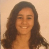

The Game:MasterMind
| Fotos | Nomes | Sobre cada | |
|---|---|---|---|
|  | Ana Alferes | fc50035@alunos.fc.ul.pt | A Ana é de Palmela e tem 18 anos. O seu sonho é dancar pelo mundo fora. Gosta muito de festejar e divertir-se com os seus amigos. |
| Pedro Lopes | fc49988@alunos.fc.ul.pt | O Pedro é do Entrocamento e tem 18 anos. Gosta de futebol, estando sempre a apoiar o grande Porto. | |
| Rodrigo Alcarva | fc50011@alunos.fc.ul.pt | O Rodrigo é de Oeiras e tem 18 anos. Pratica futebol federado nos seus tempos livres, gosta imenso de fotografia, tendo já feitos enumeros filmes |